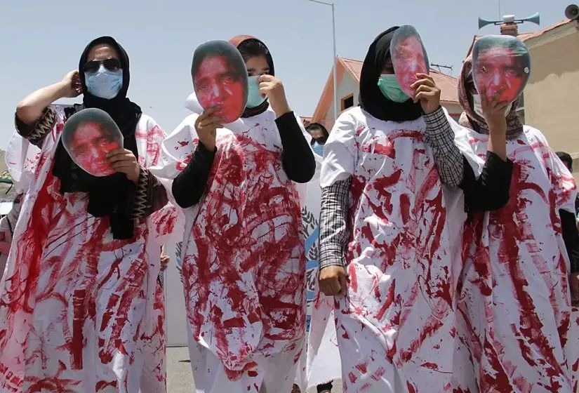

翻译社2021年9月|罩袍之下的她们——透过媒体看阿富汗女性的境遇

不要忘记阿富汗女性已经走了多远——塔利班无法剥夺她们在过去20年中取得的成就
“在这个国家，我们都在枷锁下生存”
Khadija和Aisha姐妹
2017年12月一个晴朗的冬日，23岁的Khadija在吻别她三个月大的儿子后选择了自焚。她在用火柴点燃煤油前还做了一个简短的祈祷：
“上帝，请求您将这永久的痛苦停止，”Khadija恳求道。此时的阿富汗赫拉特阳光普照，她跪在院子中间一边祈祷一边用铜灯往自己身体上浇煤油。然后用火柴点燃自己浇满煤油的身体，小鸟的啁啾声是她在失去意识前最后听到的东西。然而她的祈祷并没有得到回应。Khadija被烧成三级烧伤，第二天早上全身包满绷带在赫拉特医院阿富汗唯一的烧伤病房中醒来。接受采访时Khadija要求时代杂志不要公布她的姓氏和家人的名字。
自焚前，Khadija曾向姐姐Aisha哭诉，自己试过逃跑，但失败了。Khadija和大多数阿富汗妇女一样都是家暴的受害者。结婚四年来，丈夫一直打骂她，说她又丑又笨是个“没用的东西”。
在医院里，Khadija的眼泪流过满是疤痕的脸，说“如果知道会到今天这个地步，我不可能会嫁给他。在这个国家，我们都在枷锁下生存。
当Khadija三岁时，她的母亲死于分娩并发症，留下他们的父亲穆罕默德抚养Khadija和她的四个兄弟姐妹。阿富汗是世界上孕产妇死亡率最高的国家之一。
在Khadija15岁的时候父亲就开始为他找婆家。彩礼出价最高的是一个声誉“足够好”的工薪阶层家庭。穆罕默德收下了3400美元礼金。
Khadija对此不开心，但是她别无选择。即使她的丈夫虐待她，穆罕默德也很坚决地表示——她必须和丈夫呆在一起。“我照顾不了她。我希望我可以，但她和丈夫一家待在一起更好，”他说。“相信我，她会过得更好。”
Khadija婚后就开始被丈夫虐待。婆婆告诉她，她要做的唯一的事情就是生育。在经历了几次流产后，她终于生下了儿子。她以为只要生下了孩子，虐待就会停止，但情况却变得更糟了。
姐姐Aisha耸耸肩说：“家暴非常普遍。我丈夫多年来也一直打我。”
Aisha26岁时，她的丈夫已经71岁。这些年来，她曾考虑过离婚，但离婚后她将失去三个孩子的监护权，而且有可能永远不能再结婚。离婚后母亲对孩子的监护只能到7岁，之后必须将孩子交给父亲抚养。
在一个虐待女性很少被定为犯罪的国家，Khadija的自焚最终让警察将她的丈夫以家暴罪逮捕，此事非比寻常。但Khadija却面临比自杀前更加两难的困境——公婆不让她见自己的儿子，除非她和警察说丈夫并没有家暴，之前的指控都是她在说谎。Khadija的公婆告诉记者，他们的儿子“从未打过”Khadija，是这个女人破坏了他们家的名誉。当他们的儿子从监狱打电话回家时，他也告诉记者他是无辜的。
(赫拉特省的立法选举投票中心，阿富汗妇女正在排队等候投票。Hoshang Hashimi—AFP/Getty Images)
1996年到2001年在塔利班统治下的阿富汗，女性被禁止上学或工作，成为公共生活中的隐形人。连年战乱的疲惫使得许多阿富汗人并没有反抗这个伊斯兰原教旨主义组织。但现实很快证明，和平是以牺牲许多社会、政治和宗教方面的自由为代价的。
当时，塔利班全面实施伊斯兰教法（Sharia），妇女和女童的教育基本被禁止，妇女不允许外出工作，甚至在没有男性监护人的情况下禁止离开家门。外出的女性必须穿罩袍，所有形式的娱乐活动都被禁止：从音乐、电视到异性社交。许多受过教育的阿富汗人都逃亡邻国巴基斯坦或其他国家，留下的人则不得不改变自己的生活以顺应专制政权的要求。
塔利班统治下的生活是沉寂的。车很少，没有音乐，没有电视，没有电话，人行道上也没有闲谈。无论在室内还是室外，人们都感到害怕。那些冒险外出的人低声说话，害怕由于胡须或罩袍不够长招致塔利班的殴打。闪亮的棕色磁带从树木、路牌和电线杆上飘落下来，这是对那些胆敢私下演奏音乐的人的警告。喀布尔加齐体育场的比赛已被每周五祈祷后的公开处决代替。塔利班用推土机或坦克将墙壁推倒在被指为同性恋的男子身上，偷窃者被砍手，受到通奸指控的人则遭受石刑。
在阿富汗，政府和法律都没有为女性生存环境的恶化承担起责任
2018年7月在布鲁塞尔举办的北约峰会（the NATO Summit）上一名阿富汗女外交官（她要求匿名）告诉记者：政府想表现出他们现在优先考虑了女性的权益，但实际上并非如此。支持阿富汗妇女是世界各地政府口头承诺，但金钱和相关援助从来没有到达过需要的人手中，而是被腐败和战争侵占了。透明国际（Transparency International）将阿富汗列为世界上第四大腐败国家，并指出，阿富汗政府的腐败阻碍了人道主义援助的顺利进行。
在北约峰会上记者曾问前总统阿什拉夫·加尼(Ashraf Ghani)，为什么阿富汗三分之二的女孩仍然失学。Ghani的回复将这些数字归咎于西方援助工作考虑不周、方向不明、不结合当地现实。
Ghani说到：“有多少女子中学有厕所？这是最基本的一个问题。居住地三公里外有多少所女校？国际专家只有男性中心视角。他们谈论性别问题的小册子是很光鲜，但没有实用性。”
但是Medica Afghanistan（MA）指出，阿富汗政府没有为女性生存环境恶化以及合法权益明显倒退的现实承担起应有的责任。2015年，27岁的法尔昆达·马利克扎达(Farkhunda Malikzada) 在喀布尔在被诬陷为“焚烧古兰经“后被一群暴民殴打致死。事后，政府对民众采取行动打击针对妇女的暴力行为的要求置之不理，几乎无所作为。
2018年2月，阿富汗通过了新刑法，这部新刑法被联合国阿富汗援助团(UNAMA)誉为刑事司法改革的里程碑。但是新刑法在通过之前删除了“惩罚针对女性的暴力行为”这一章节。同年6月，联合国的一份报告指责阿富汗刑事司法系统，忽视了针对女性的暴力行为。
在2001年美国入侵战争中，女性权利本应该是取得胜利的一方，但战争的遗患却仍然在戕害阿富汗女性。

美国在这个拥有3500万人口的国家发动了最漫长的战争，这场战争有时被宣传成“为妇女的权利和尊严而战”。2018年10月，联合国表示阿富汗平民死亡人数达到2014年以来的最大值：1月至9月，至少有2798名平民死亡，5000多人受伤。2018年7月，Gallup对阿富汗民众进行的一项调查结果显示，阿富汗人对自己的生活非常悲观，认为现在的生活状态是有史以来最差的。
在所有战乱中，妇女都遭受着最为深重的痛苦，现在的阿富汗仍是世界上最不适合女性居住的地方。自2001年以来阿富汗政府和国际援助机构一直在努力为女孩们提供接受教育的机会，但仍有大约三分之二的阿富汗女孩没有上学、87%的阿富汗女性是文盲，同时70-80%的女性面临强制婚姻，其中包含未满16岁的女孩。
2014年政府的统计数据显示，自杀事件中有80%的当事人为女性，这使得阿富汗成为世界上少数几个女性自杀率较高的地方之一。心理学家将这种反常现象归因于无休止的家庭暴力和贫困。2008年，全球权利调查发现近90%的阿富汗妇女都经历过家庭暴力。
“与这种歧视作斗争，只能靠我们女性自己。除了我们自己，没有人能救我们。”
律师Naseri，医生Ersad，心理咨询师Nikaed和活动家Nikzad
Medica Afghanistan（MA）活动人士Naseri也是战争遗患的受害者。她的母亲在12岁的时候被迫嫁给了她的父亲，婚后遭受了多年的家暴。母亲和她编造了要去清真寺或研究古兰经的谎言，好让父亲允许她离开家去上学。Naseri的父亲主张：“学校不是女孩子应该待的地方。”后来她们说服父亲让Naseri上大学，她成了家里第一个也是唯一一个拥有学位的女性。
面对如此多针对女性的压迫，Naseri发誓要成为一名律师，帮助像母亲和14岁就被迫结婚的姐姐这样境遇的女性。
“阿富汗女性需要靠自己解决问题。我们不能等待政府和国际慈善机构来拯救或解放我们。”一个名叫Sahar的16岁女孩坐在大厅对面等着和Naseri谈话。她的母亲在她试图从六楼阳台上跳下去后把她带到了MA。几天后她就要嫁给自己的表哥，据说Sahar的叔叔从她10岁起就一直在强奸她。
Naseri说，“独立做这项工作要冒很大的风险，我们随时都有可能被杀死”。确实，她每周都会收到死亡威胁。2017年，一群男性来到这里，声称Naseri在推动离婚，她在破坏阿富汗社会结构，并威胁要把MA的办公室烧掉。“我能感受到女性们这个环境里面所遭受的痛苦。”幸运的是上大学时，她与同班同学相爱，成为家里第一个摆脱包办婚姻的女性。
29岁的Hasina Ersad是Khadija的主治医生，几个月来每天都去看她几次。她说，“我从记事起就能看到像Khadija这样的女人，正是因为她们，我才下定决心要成为一名医生。”
Khadija的心理咨询师 Naema Nikaed是阿富汗为数不多的为自杀幸存者提供咨询的人之一。Nikaed和同事们见证了过去几年女性自杀率的上升。她说，“如果政府不开始优先考虑妇女的生命，那么我们在阿富汗将陷入一场永远持续的战争。与这种歧视作斗争，只能靠我们女性自己。除了我们自己，没有人能救我们。”
（阿富汗妇女在赫拉特市一公园犁地。根据世界银行的数据，2017年，19%的阿富汗妇女有正式工作。Hoshang Hashimi-AFP / Getty Images）
Naseri的密友、阿富汗妇女网络(Afghan Women's Network)的负责人Nikzad每周都去找Khadija，并提醒她申请离婚。“可是妈妈死了，爸爸老了，我又能上哪儿去呢?”她哭着说。
半年后的6月，当Khadija离开医院时她非常疲惫。尽管Naseri建议她搬到避难所，但她还是决定回到公婆身边。因为见不到儿子的痛苦让她难以承受，而在收容所抚养孩子似乎又让人望而生畏。但和公婆住了一个月后Khadija在半夜哭着给Naseri打电话。她的公婆根本不让她碰自己的孩子。她的丈夫还一直威胁说，打算在出狱后“惩罚”她。
11月底，她的丈夫在她自焚不到一年以后就出狱了。Naseri试图联系Khadija，但她的手机一直关机。Naseri怀疑Khadija已经越境逃往伊朗。她不太可能再见到儿子了。
在Naseri看来， Khadija是一直以来存在于这个国家社会文化里，针对女性的战争中无数隐形的受害者之一。“我本来会成为另一个Khadija，” Naseri说。“我们命运相连，什么都不能让我们与彼此分割。”
在一个饱受数十年战争和资源匮乏折磨的国家，Khadija的故事展示了阿富汗妇女正在努力活得更有尊严。她的故事更向我们展示了，在缺乏政府支持、国际援助也逐渐减少的情况下，女性是如何挺身而出互相帮助的。
议员Barakzai，执行董事Naderi和国会副主席Koofi
1999年夏天的一个早晨，Barakzai醒来时感到头晕目眩。根据塔利班的规定，她需要在一名男性监护人的陪同下才能离家去看医生。她的丈夫在工作，她也没有儿子。于是，Barakzai给两岁的女儿剃了光头并穿上男孩的衣服，以冒充自己的监护人。罩袍的蓝色褶皱隐藏了她的指尖——涂抹红色的指甲油也违反了塔利班的禁令。当她们带着处方向药房走去时，一卡车来自“美德宣传与预防罪恶”部门的塔利班武装分子停在了她们身旁。这些人经常在喀布尔附近寻找违反道德准则的阿富汗人进行公开羞辱和惩罚。武装分子们跳下卡车，开始鞭打Barakzai，直到她摔倒、哭泣。“你知道什么是虐待狂吗？他们就是享受毫无缘由地打你、伤害你、不尊重你。”
Barakzai将那一刻归于她作为社会活动家的起点。1992年阿富汗首都陷入内战之前，她一直在喀布尔大学学习水文气象学和地球物理学。她很快做出决定：她将在自己居住的公寓大楼里为女孩组织地下课程（这里居住着大约45个家庭），她还将协助起草阿富汗宪法、在议会担任两届职位。
2001年，塔利班战败。随后的二十年里，女性可以上学、从大学毕业、接受外科医生培训、接生婴儿、做助产士、在议会参选、担任政府职位、成为警察、参演电影、工作——当记者、做翻译、主持电视节目、进入国际组织。她们中的许多人都维持着难以想象的平衡，平衡工作与养育孩子，平衡妻子、母亲、姐妹、女儿的角色，她们每天都在打破玻璃天花板，而且往往处于极大的危险之中。
阿富汗妇女组织构建了调解、咨询和法律援助的服务网络，为遇到家庭问题、遭受暴力或入狱的女性提供帮助。记者问阿富汗妇女组织创始人，执行董事Manizha Naderi是否认为过去20年阿富汗妇女的情况有所好转。“绝对，”她回答道，“过去的20年里，从教育到法律制度、社会、经济……女性获得了很多。”
(2010年毕业于喀布尔大学语言文学系的女性。大西洋月刊）
但现在女性权益正在消失。塔利班再次占领了阿富汗所有主要城市，武装分子打开监狱大门释放数千名囚犯，让妇女下班回家，将女童逐出学校，许多阿富汗人流离失所。Fawzia Koofi于九十年代在家乡达赫尚省建立了秘密女子学校。她在2005年至2019年间担任国会议员和副主席，并且一直是代表阿富汗共和国政府与塔利班进行和平谈判的官员之一。Koofi还独自抚养两个年幼的女儿，塔利班曾两次试图暗杀她，为了以防万一，她总是随身携带一封给女儿们的手写信。Koofi对目前塔利班“允许阿富汗妇女在家庭以外学习和工作”的承诺表示怀疑，“老实说，我不害怕被暗杀，但我怕国家再次陷入混乱。”
罩袍的价格在阿富汗翻了一番，女性正在购买最好的盔甲以试图保护自己免受塔利班的攻击。“没有人帮我们了，你能和美国人谈谈吗？”记者每天都能在WhatsApp上收到来自阿富汗女性的类似信息，表达恐惧、询问如何离开阿富汗。
过去20年间，阿富汗女性的决心和智慧让人惊叹不已。曾经在喀布尔清爽的下午，你坐在一位阿富汗女演员的汽车副驾驶座上兜风。当她播放伊朗音乐、双手握着方向盘舞动时，她美丽的妆容和头发一览无余。她开车经过检查站，经过成群结队的罩袍，经过震惊和冷笑的男人，你们一同开怀大笑。
不要忘记阿富汗女性已经走了多远——塔利班无法剥夺她们在过去20年中取得的成就：她们的教育、工作驱动力以及所品尝到的自由的滋味。
今天的阿富汗有新一代的女性，她们不记得在塔利班统治下的生活是怎样的。“她们充满能量、希望和梦想。她们更加警觉，她们正在与世界交流。塔利班正在夺取领土，但无法占领人们的心灵和思想。”
伊斯兰国家的性别不平等，并不能完全归咎于宗教教义
2018年，沙特阿拉伯终于立法给予了女性开车的权力。在此之前，沙特阿拉伯是全世界唯一一个女性开车违法的国家。与此同时，沙特阿拉伯也开始给予女性参军，观赏体育赛事和音乐会的权力。一个高级教士甚至提出，可以考虑允许女性不必再穿全身罩袍。
不止沙特阿拉伯，自2011年起，中东和北非各国就开始了立法升级女性权益。目前北非几乎所有的国家都设置了性别比例：政治党派的各个职位必须达到最低比例的女性提名。在埃及，突尼斯，伊拉克，也门，摩洛哥和黎巴嫩，女性的国籍将可以传承给后代——在此之前，无论出生地或居住地，后代必须继承父亲的国籍。这个地区的传统法律——当性侵犯人同意与受害者结婚时犯罪行为不予追究——也正面临大面积的废除。中东和北非已有9个国家立法打击家庭暴力。
很多国际观察者都将中东和北非地区落后的女性权益归咎于宗教，尤其是伊斯兰教。他们暗示，提高这一地区的女性权益，只能靠这些国家的西化，或政教分离。一些人认为，性别不平等在以伊斯兰教为主导的国家更为普遍，而长期居住在西方的穆斯林，也更倾向于保留更多父权制观点；他们认为，这种现象可以说明，性别不平等与宗教教育和价值观紧密相关。
但加州大学的一项研究表明，宗教并不能完全解释社会对女性权益的无视。如果宗教确实是一切行为的准则，那么在这些国家，无论国民还是执政者都应当更加严格地履行教义——这当然也应该包含伊斯兰教义中提倡性别平等的部分。
比如，伊斯兰教逊尼派和什叶派教义中，都认定女性与男性有相同的财产购买和管理权，但在继承权一项，女性继承人所得只能是男性继承人的一半。如果国家立法完全基于教义，那么在伊斯兰教国家，女性就应拥有平等的财产权，但不平等的继承权。
实际情况却是：各伊斯兰教国家在继承权一项都以教义为名，忠实履行不平等的继承权，但在财产权一项却倾向于忽视教义规定的男女平等。这恰恰说明，这些国家中存在的系统性性别不平等，并不能完全归咎于伊斯兰宗教教义。而实现性别平等，也并非一定要依靠政教分离。
排除了宗教作为女性权益落后的借口，伊斯兰教国家最近在女性权益上的频繁升级就有据可循了。在这些国家的文化中，提高女性权益主要依赖两种方式（这与许多其他宗教和非宗教国家中的方式也并无根本不同）。
第一种是“核心权利”：通过保证女性受教育权和工作权，女性的社会经济地位逐渐改善，从而推动政治上的性别平等政策。第二种是“伸张权利”：通过曝光和比较各国在性别平等政策上的优点和不足，促成落后地区向国际标准靠拢。
田野调查的结果与此相符。在41个穆斯林为主的国家中，女性享有更平等的财产权的地区，往往是女性受教育机会较多，或女权主义者的网络较发达的地区。在有些中东和北非的伊斯兰国家，女学生的成绩已经超过了男学生，而女性进入大学的比例也高于男性。即使阿拉伯国家女性劳动参与率普遍不高，但近年来这一数字也有显著上升。除此之外，在中东和北非国家活跃的女权主义团体数量自1980年以来翻了三倍：维权行动也促进了这个地区女性权益的提升。
（来源：华盛顿邮报，时代，对话，大西洋月刊；翻译：村长，Karen，小橘，小庄）
部分图片来源于网络，侵权删除。